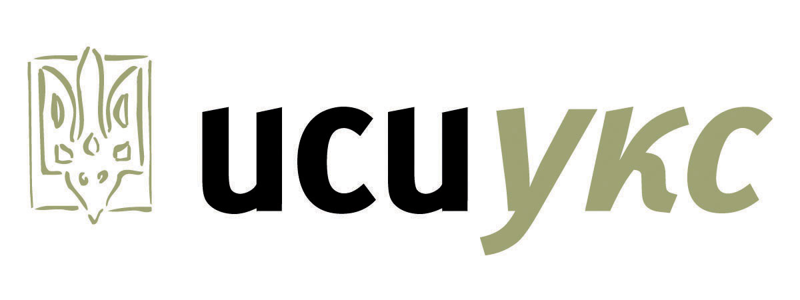

Donors
Many thanks to all our generous donors. We couldn't do it without you!
Major Sponsor $1000+
-
Ukrainian Credit Union

Benefactors $500 - $750
Kantor Currency Exchange
The Great Martyr George the Victorious Ukr. Catholic Church (Oshawa)
UCWLC - St. Volodymyr Branch (Thornhill Ontario)
UCWLC - Sts Peter & Paul Branch
UCWLC - Toronto Eparchial Executive
Donors up to $500
Buduchnist Credit Union
Dormition of the Mother of God Ukr. Catholic Church (Mississauga)
Holy Eucharist Ukr. Catholic Church
Holy Protection of the Mother of God Ukr. Catholic Church (Burlington)
Knights of Columbus Shashkevych Council 7464
Nativity of the Holy Mother of God Ukr. Catholic Church (Niagara Falls)
St. Demetrius the Great Martyr Ukr. Catholic Church (Toronto)
St. John the Theologian Ukr. Catholic Church (St. Catharines)
St. Mary's Ukr. Catholic Church (Sault St. Marie)
Sts Cyril & Methodius Ukr. Catholic Church (St. Catharines)
UCWLC - Dormition of the Mother of God Branch (Mississauga)
UCWLC - Holy Eucharist Branch
UCWLC - Holy Protection of Blessed Virgin Mary Branch (Burlington)
UCWLC - St. Demetrius Branch
UCWLC - St. Josaphat's Branch
UCWLC - St. Nicholas Branch
UCWLC - Sts Cyril & Methodius Branch
Ukr. Catholic Church of Holy Protection (Toronto)